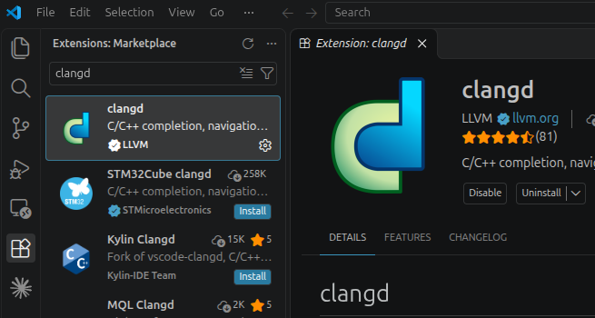

1 Εγκατάσταση Εργαλείων
Θα χρειαστούμε 3 βασικά εργαλεία για τη μεταγλώττιση της C++ σε γλώσσα μηχανής: τους μεταγλωττιστές (compilers) g++ και clang++, καθώς και το cmake, ένα εργαλείο που οργανώνει τη μεταγλώττιση μεγαλύτερων προγραμμάτων που αποτελούνται από πολλά αρχεία. Στα επόμενα κεφάλαια θα χρησιμοποιούμε κυρίως τους δύο compilers, ενώ το cmake θα μας χρειαστεί όταν τα προγράμματά μας μεγαλώσουν.
Όλα τα εργαλεία εγκαθίστανται από το τερματικό (terminal) με λίγες εντολές. Ακολουθήστε την ενότητα που αντιστοιχεί στο λειτουργικό σας σύστημα και στο τέλος κάντε τον έλεγχο της εγκατάστασης.
1.1 Linux
Στο Linux αρκεί ο διαχειριστής πακέτων (package manager) της διανομής σας. Ανοίξτε ένα τερματικό και εκτελέστε τις εντολές που αντιστοιχούν στη διανομή σας:
1.1.1 Ubuntu, Debian, Linux Mint
sudo apt update
sudo apt install build-essential clang cmakeΤο πακέτο build-essential περιέχει τον gcc (για την C), τον g++ και τα βασικά εργαλεία μεταγλώττισης, και το clang περιέχει τον clang++.
1.1.2 Fedora
sudo dnf install gcc-c++ clang cmake1.1.3 Arch Linux, Manjaro
sudo pacman -S --needed gcc clang cmake1.2 macOS
Στο macOS χρειάζεται επίσης μόνο το terminal:
1.2.1 Βήμα 1: Command Line Tools της Apple
xcode-select --installΘα εμφανιστεί ένα παράθυρο που ζητά επιβεβαίωση· πατήστε Install. Με αυτόν τον τρόπο εγκαθίσταται ο clang++ της Apple, χωρίς να χρειαστεί ολόκληρο το Xcode.
g++ του macOS είναι στην πραγματικότητα clang++
Μετά το βήμα 1 υπάρχει εντολή g++, αλλά είναι απλώς ψευδώνυμο για τον clang++ της Apple. Η εντολή g++ --version το αποκαλύπτει, αφού τυπώνει Apple clang. Για τον πραγματικό g++ (GCC) χρειάζονται τα βήματα 2 και 3.
1.2.2 Βήμα 2: Homebrew
Το Homebrew είναι ο πιο διαδεδομένος διαχειριστής πακέτων για το macOS. Εγκαθίσταται με την εντολή:
/bin/bash -c "$(curl -fsSL https://raw.githubusercontent.com/Homebrew/install/HEAD/install.sh)"Στο τέλος της εγκατάστασης το Homebrew τυπώνει την ενότητα Next steps με δύο εντολές που προσθέτουν την brew στο PATH. Αντιγράψτε τες και εκτελέστε τες. Σε υπολογιστές με επεξεργαστή Apple Silicon (M1 και νεότερους) είναι:
echo 'eval "$(/opt/homebrew/bin/brew shellenv)"' >> ~/.zprofile
eval "$(/opt/homebrew/bin/brew shellenv)"1.2.3 Βήμα 3: GCC και CMake
brew install gcc cmakeΤο Homebrew εγκαθιστά τον g++ με τον αριθμό της έκδοσης στο όνομα, ώστε να μη συγκρούεται με τον g++ της Apple, π.χ. g++-16. Δείτε ποια έκδοση εγκαταστάθηκε με:
ls $(brew --prefix)/bin/g++-*Στο macOS λοιπόν χρησιμοποιείτε g++-16 (ή όποιος αριθμός εμφανιστεί) όπου οι σημειώσεις γράφουν g++, και clang++ για τον clang.
1.3 Windows
Τα Windows δεν διαθέτουν δικό τους περιβάλλον για τους g++ και clang++. Θα τους εγκαταστήσουμε μέσω του MSYS2, ενός περιβάλλοντος που φέρνει στα Windows τον διαχειριστή πακέτων pacman (τον ίδιο με το Arch Linux) και, μέσω αυτού, τα εργαλεία που χρειαζόμαστε.
1.3.1 Βήμα 1: Εγκατάσταση του MSYS2
Ανοίξτε το PowerShell (αναζήτηση «PowerShell» στο μενού Έναρξη) και εκτελέστε:
winget install -e --id MSYS2.MSYS2Το winget υπάρχει ήδη στα Windows 10 και 11. Το MSYS2 εγκαθίσταται στον φάκελο C:\msys64.
Αν η εντολή winget δεν αναγνωρίζεται, ενημερώστε την εφαρμογή App Installer από το Microsoft Store ή κατεβάστε τον installer του MSYS2 από την επίσημη ιστοσελίδα.
1.3.2 Βήμα 2: Ενημέρωση του MSYS2
Από το μενού Έναρξη ανοίξτε το MSYS2 UCRT64. Προσοχή να επιλέξετε αυτό και όχι κάποιο από τα υπόλοιπα (MSYS2 MSYS, CLANG64 κ.λπ.). Στο τερματικό που ανοίγει εκτελέστε:
pacman -SyuΠατήστε Y για επιβεβαίωση. Αν το τερματικό κλείσει μόνο του κατά την ενημέρωση, ανοίξτε ξανά το MSYS2 UCRT64 και εκτελέστε ξανά pacman -Syu, μέχρι να μην υπάρχει τίποτα για ενημέρωση.
1.3.3 Βήμα 3: Εγκατάσταση των εργαλείων
Στο ίδιο τερματικό (MSYS2 UCRT64):
pacman -S --needed mingw-w64-ucrt-x86_64-gcc mingw-w64-ucrt-x86_64-clang mingw-w64-ucrt-x86_64-cmake mingw-w64-ucrt-x86_64-ninjaΠατήστε Enter για να επιλεγούν όλα τα πακέτα και Y για επιβεβαίωση. Το ninja είναι ένα γρήγορο εργαλείο build που χρησιμοποιεί το cmake.
1.3.4 Βήμα 4: Προσθήκη στο PATH
Για να λειτουργούν οι εντολές g++, clang++ και cmake και εκτός του MSYS2, προσθέστε τον φάκελό τους στο PATH του χρήστη. Στο PowerShell:
[Environment]::SetEnvironmentVariable("Path", [Environment]::GetEnvironmentVariable("Path", "User") + ";C:\msys64\ucrt64\bin", "User")1.4 Έλεγχος της εγκατάστασης
Σε ένα νέο τερματικό (στα Windows, το PowerShell) εκτελέστε:
g++ --version
clang++ --version
cmake --versionΚάθε εντολή πρέπει να τυπώνει τον αριθμό της έκδοσης του αντίστοιχου εργαλείου (στο macOS, γράψτε g++-16 αντί για g++).
Τέλος, δοκιμάστε να μεταγλωττίσετε ένα πρόγραμμα. Αποθηκεύστε τον παρακάτω κώδικα σε ένα αρχείο main.cpp:
#include <iostream>
int main() {
std::cout << "All good!\n";
return 0;
}και, στον φάκελο όπου βρίσκεται το αρχείο, εκτελέστε:
g++ -std=c++20 -o main main.cpp
./helloΑν εμφανιστεί το μήνυμα All good!, η εγκατάσταση ολοκληρώθηκε. Επαναλάβετε με clang++ στη θέση του g++ για να ελέγξετε και τον δεύτερο compiler.
1.5 Εγκατάσταση IDE
Πριν η συγγραφή κώδικα αρχίσει να γίνεται χρησιμοποιώντας προγραμματιστικό περιβάλλον, γινόταν σε απλούς editors. Καθώς οι ανάγκες για πολύ μεγάλους κώδικες αυξάνονται, με πολλούς προγραμματιστές να δουεύουν πάνω στο ίδιο λογισμικό, η συγγραφή κώδικα γίνεται ασφαλέστερη και ευκολότερη όταν ο editor στον οποίο πληκτρολογούμε αναγνωρίζει την σύνταξη της γλώσσας και μας υποδεικνύει λάθη ή εντολές.
Ένα IDE με το οποίο οι περισσότεροι προγραμματιστές είναι εξοικειωμένοι είναι το Visual Studio Code.
1.6 Εγκατάσταση VSCode
Κατεβάστε και εγκαταστήστε το Visual Studio Code από την επίσημη ιστοσελίδα του. Μετά την εγκατάσταση, ανοίξτε τα extensions για να κατεβάσετε τον language server clangd:

clangd (από την LLVM) στο Extensions Marketplace του VS Code.